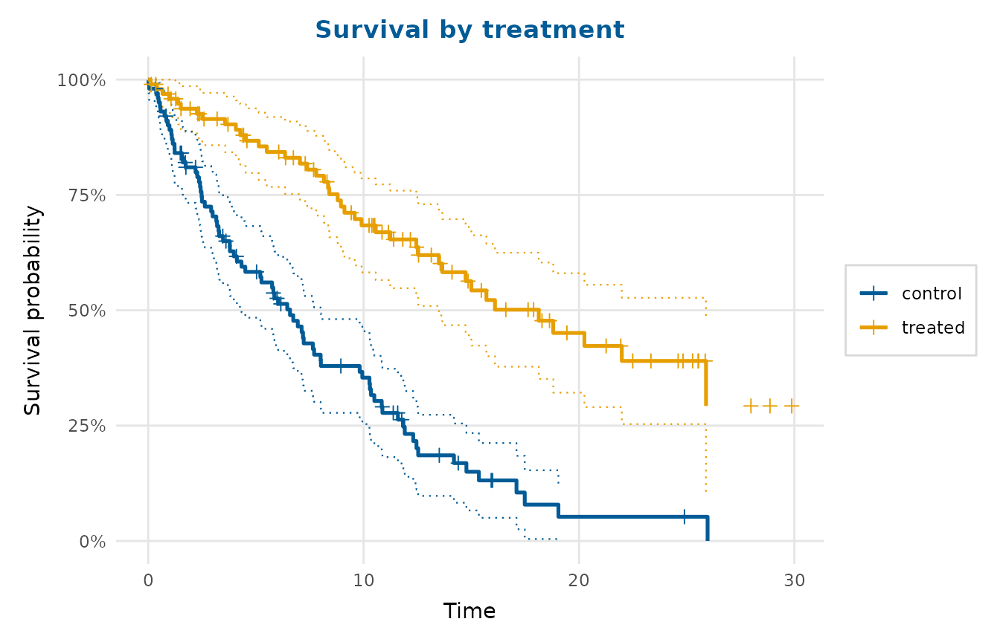
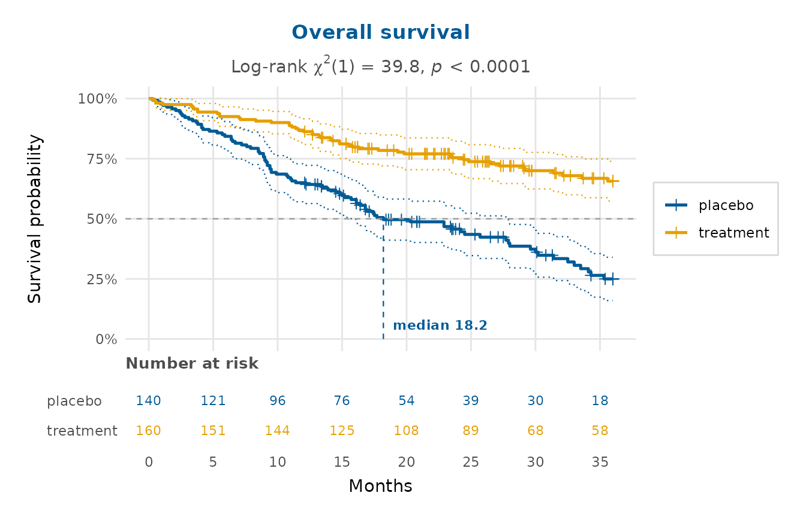

Draws Kaplan-Meier survival curves, optionally by group, with stepwise
confidence limits and censoring marks. The Kaplan-Meier estimate and its
Greenwood standard error are computed with base R, so no modelling package is
required; a survfit object from the 'survival' package is also accepted.
Usage
survival_plot(
time,
status = NULL,
group = NULL,
conf_level = 0.95,
censor_marks = TRUE,
risk_table = FALSE,
median_line = FALSE,
logrank = FALSE,
risk_breaks = NULL,
palette = NULL,
legend_inside = FALSE,
title = NULL,
x_lab = "Time",
y_lab = "Survival probability"
)Arguments
- time
A numeric vector of follow-up times, a data frame with
time,statusand optionalgroupcolumns, or asurvfitobject.- status
Event indicator when
timeis a vector. Either the 0/1 convention (0= censored,1= event) or thesurvival::Surv()1/2 convention (1= censored,2= event) is accepted; logical values are also allowed. Other codings raise an error.- group
Optional grouping variable (a vector, or a column name when
timeis a data frame).- conf_level
Confidence level for the limits (
NAto omit them).- censor_marks
Whether to mark censoring times with a
+.- risk_table
Whether to add a number-at-risk table beneath the curves (composed with 'patchwork'). Defaults to
FALSE.- median_line
Whether to draw dashed guides to each group's median survival time and label it. Defaults to
FALSE.- logrank
Whether to add a log-rank test of the group difference as a subtitle (two or more groups only). Defaults to
FALSE.- risk_breaks
Optional numeric vector of times at which to report the number at risk. Defaults to the curve's x-axis breaks.
- palette
Colours for the groups; defaults to
depictr_palette().- legend_inside
When
TRUE(and there are several groups), draw the group legend inside the panel (in the bottom-left corner a monotone-decreasing survival curve always leaves empty) over a translucent background, instead of in a right-hand margin. Defaults toFALSE.- title, x_lab, y_lab
Title and axis labels.
Value
A ggplot2::ggplot object or, when risk_table = TRUE, a
'patchwork' object stacking the curves above the risk table.
Details
For publication-ready figures the plot offers the three annotations that define a "survminer-style" Kaplan-Meier display, each behind its own argument and off by default so existing behaviour is unchanged:
Number-at-risk table (
risk_table = TRUE): a small panel composed beneath the curves with 'patchwork', giving the number of subjects still at risk in each group at the x-axis breaks.Median-survival guides (
median_line = TRUE): dashed reference lines from the 0.5 survival level down to each group's median survival time, with the median value labelled. Groups whose curve never reaches 0.5 (median not estimable) are skipped.Log-rank test (
logrank = TRUE): for two or more groups, the chi-squared log-rank statistic and its p-value are added as a subtitle.survival::survdiff()is used when the 'survival' package is installed, otherwise an equivalent base-R log-rank test is computed from the risk/event tables.
References
Kaplan EL, Meier P (1958). “Nonparametric estimation from incomplete observations.” Journal of the American Statistical Association, 53(282), 457–481. doi:10.1080/01621459.1958.10501452 .
Greenwood M (1926). The natural duration of cancer, volume 33 of Reports on Public Health and Medical Subjects. His Majesty's Stationery Office, London.
Mantel N (1966). “Evaluation of survival data and two new rank order statistics arising in its consideration.” Cancer Chemotherapy Reports, 50(3), 163–170.
Examples
set.seed(1)
n <- 200
grp <- sample(c("control", "treated"), n, replace = TRUE)
time <- rexp(n, rate = ifelse(grp == "treated", 0.05, 0.1))
cens <- runif(n, 0, 30)
obs <- pmin(time, cens)
event <- as.integer(time <= cens)
survival_plot(obs, event, group = grp, title = "Survival by treatment")

# survminer-style figure: risk table, median guides and a log-rank test
data(clinical_trial)
survival_plot(clinical_trial$time, clinical_trial$event,
group = clinical_trial$arm, risk_table = TRUE,
median_line = TRUE, logrank = TRUE,
x_lab = "Months", title = "Overall survival")
